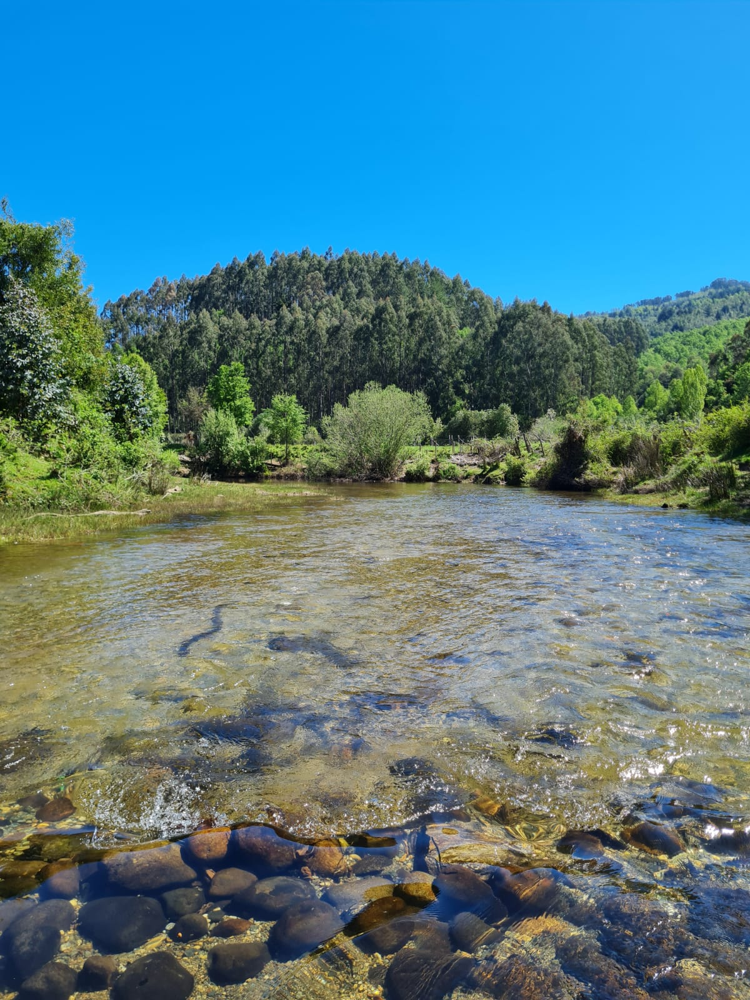

Comunidad de Agua Potable Rural de Mashue y Llancacura
Características Generales
Lugar: Mashue, Región de Los Ríos, Chile.
Fecha: 22 de Octubre de 2024.
Resumen
Se visitío la Comunidad APR de Mashue que destaca por su modelo de restauración ambiental basado en el trabajo comunitario y la recuperación de microcuencas afectadas por plantaciones exóticas. Destaca además la inclusión de pagos simbólicos por servicios ecosistémicos y prácticas sostenibles, como exclusión de ganado y regeneración natural. Estas acciones demuestran cómo integrar teoría y práctica para el manejo sostenible del agua y los ecosistemas.
Descripción de Actividad
Fuímos a visitar la comunidad APR, un ejemplo icónico y pionero de trabajo comunitario para la restauración ambiental. Este modelo demuestra que es posible realizar esfuerzos de restauración desde las bases comunitarias. Aunque hay un presidente, su rol es más simbólico, ya que el trabajo se distribuye entre los integrantes. Este APR administra un territorio de 2,500 hectáreas, de las cuales el 20% son predios forestales. Actualmente, cuenta con 226 socios activos, aunque 202 están en lista de espera debido a la falta de agua.
El origen de los APR se remonta a los años 60, como una respuesta a los movimientos sociales de esa época, incluyendo la Revolución Cubana. Con el apoyo del Banco Interamericano de Desarrollo, estos comités surgieron para mejorar las condiciones rurales en plena Reforma Agraria. En Mashue, el comité comenzó en 1998 cuando se agotaron las fuentes de agua existentes, como pozos históricos. Formalizado en 2001, logró suministrar agua a los hogares en 2013.
Sin embargo, los bosques degradados, debido al predominio de plantaciones exóticas como pino y eucalipto, fueron identificados como la causa principal de la crisis hídrica. Esto llevó a la conclusión de que la recuperación del agua requería restaurar el ecosistema.
El programa se centra en la recuperación de microcuencas prediales. Entre sus logros destaca la negociación de cuatro años con empresas forestales, que permitió la creación de una franja ecotonal de 20 metros entre el bosque nativo y los bordes forestales, incluyendo una franja de regeneración pasiva de 5 metros. También se trabaja en el cambio de plantaciones exóticas por especies nativas. Otro hecho significativo es que los integrantes de la APR pagan por los servicios ecosistémicos (50 pesos por mt3 de agua), siendo uno de las primeras organizaciones den hacerlo.
Además de esto, también producen plantas a través de su vivero, el cual produce anualmente 8000 plantas para restaurar aproximádamente 10 hectáreas. Este trabajo incluye especies nativas como el avellano (Gevuina avellana), murta (Ugni molinae), Melí (Amomyrtus meli) y experiencias con araucarias (Araucaria araucana y Araucaria angustifolia), cuidando el origen de las semillas como factor clave. Las plántulas se cultivan con técnicas naturales, como el uso de mantillo, melaza y purín, para mejorar la calidad del suelo.
Posteriomente visitamos parte de la cuenca de Llancacura, un territorio de 7,000 hectáreas cercanas a una reserva del Estado. Aquí se llevan a cabo experimentos de reintroducción de especies como el raulí, excluyendo el ramoneo y priorizando la recuperación natural del bosque. Estas acciones marcan un camino hacia un manejo sostenible y comunitario de los ecosistemas.
Resultados y Comentarios
Como principal resultado, me llamó la atención la inclusión del gasto simbólico asociado al servicio ecosistémico. En ramos como Economía Ecológica, aprendimos que es complicado incorporar este concepto, ya que resulta difícil asignar un precio a la naturaleza (de ahí el énfasis en el carácter simbólico del gasto). Sin embargo, me pareció interesante que lo incluyeran, ya que refleja el conocimiento técnico-local y demuestra cómo la teoría puede aplicarse al mundo real. Esto, además de destacar el excelente trabajo de la comunidad en promover la reforestación con especies nativas, que se presenta como una respuesta lógica y natural al problema de la escasez hídrica. Este caso resalta cómo lo aprendido durante toda la carrera puede tener un impacto significativo en la sociedad, aunque sea en pequeña escala.
No solo eso, sino que también han realizado un destacado trabajo de conservación, tanto ex situ (a través de viveros para propagar especies como alerce y araucaria) como in situ, en lugares como Llancahue. La comunidad expresó estar consciente de los procesos de sucesión ecológica propios del área, por lo que optaron por cercar el sector para evitar el ingreso de ganado. Esto permitió observar que, en un periodo relativamente corto (20 años), comenzaron a establecerse de manera natural especies nativas no plantadas en el sitio, como el maqui (Aristotelia chilensis) y el arrayán (Luma apiculata). Estos resultados fortalecen aún más el concepto de sucesión ecológica y evidencian que este proceso ocurre de forma espontánea en la naturaleza.

Foto del día
